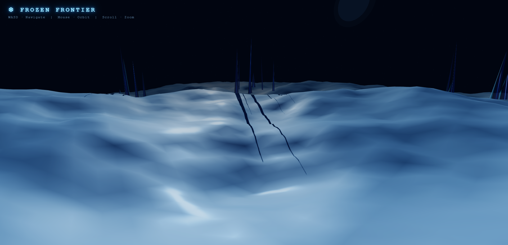

Illustrative Image

Goals
- Real-time first-person exploration of a fictional alien ice planet using Three.js
- Procedurally generated icy terrain with heightmap displacement and multi-octave noise
- Alien ice spires, rock formations, and glowing artefacts populating the scene
- Physically-based lighting: cold directional sun with shadows, ambient, fill and point lights
- PBR texture maps (color, normal, roughness) for terrain and objects
- Particle system simulating drifting snow and ice crystals
- Deep-space skybox with procedural star field
- WASD + mouse-look first-person camera control
- Proximity HUD displaying lore snippets near points of interest
What Is Already Done
- ✔ Procedural icy terrain — multi-octave value noise displacement (180×180 segments)
- ✔ Reflective ice overlay (transparent, high-metalness layer)
- ✔ Procedural star field skybox (6 000 points, spherically distributed)
- ✔ Ice spires — 6 clusters of ConeGeometry meshes, terrain-height-aware placement, cast shadows
- ✔ Distant alien planet disc with glow halo
- ✔ Full lighting setup: cold ambient, directional sun (PCF soft shadows, 4096² map), blue fill light
- ✔ Exponential atmospheric fog (ice-blue)
- ✔ WASD camera movement + OrbitControls (mouse orbit & zoom)
- ✔ HUD overlay (title + control hints)
- ✔ Animation loop: star field rotation, sun intensity pulsing
- ✔ ACES filmic tone mapping, shadow maps enabled
- ✔ Responsive resize handler
What Remains To Be Done
- ○ Replace OrbitControls with PointerLockControls for true first-person mouse-look
- ○ Apply PBR texture maps (color, normal, roughness) to terrain and spires
- ○ Add rock formations (IcosahedronGeometry / imported mesh) scattered across terrain
- ○ Implement glowing alien artefacts with PointLights and animated emissive pulsing
- ○ Build snow particle system (BufferGeometry points, animated drift & fall)
- ○ Proximity detection — trigger HUD lore snippets when player approaches artefacts
- ○ Deploy to GitHub Pages for live URL